AIRBOT Play 用户手册
1. 机械臂包装清单
- 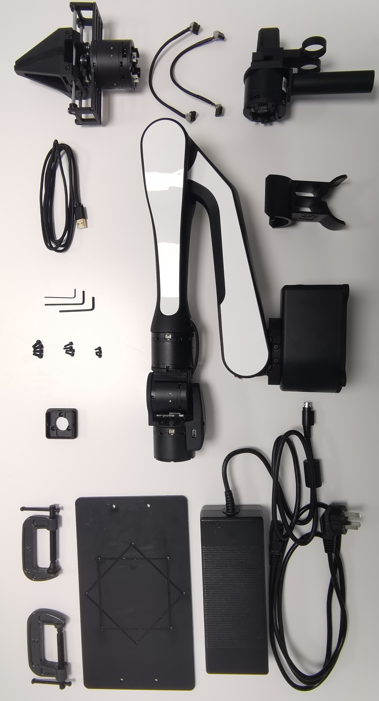
图1.1 清单图片（含选配套件) -
序号 名称 数量 / 单位 备注 1 AIRBOT Play 机械臂 1 台 2 安装底板 1 个 3 固定C型夹 2 个 4 末端连接件 1 个 5 USB 数据线 1 根 6 电源适配器 1 个 7 电源线 1 根 8 螺丝 1 包 包含 M3、M4 规格螺丝 9 L 型扳手 1 套 包含 M3、M4 规格扳手 10 标零工具 1 个 11 示教器 1 套 选配，含连接线 12 夹爪 1 套 选配，含连接线 表1.1 清单表格
技术参数
-
自由度 6 重量 3.5 kg 最大负载 15 kg 最大臂展 647 mm 电源输入 24 V ± 5%, 10 A 通信接口 USB, COM 控制模式 位置控制，力矩控制，速度控制 SDK 接口 C++, Python, ROS, ROS2, Web 上位机兼容性 x86-64, arm64 最大功耗 240 W 力反馈 有 -
关节编号 关节运动范围 关节最大速度 J1 [-180°, +120°] 180°/s J2 [ -170°, +10°] 180°/s J3 [ -5°, +180°] 180°/s J4 [-148°, +148°] 360°/s J5 [-100°, +100°] 360°/s J6 [-179°, +179°] 360°/s
2. 机械臂安装说明
2.1 单臂安装
2.1.1 安装并固定底板
-
安装底板
取出臂、底板、m4螺丝*4、L型M4扳手，根据场景按需要的角度（正安装 / 斜 45 度安装）将臂固定在底板上，如下图所示：
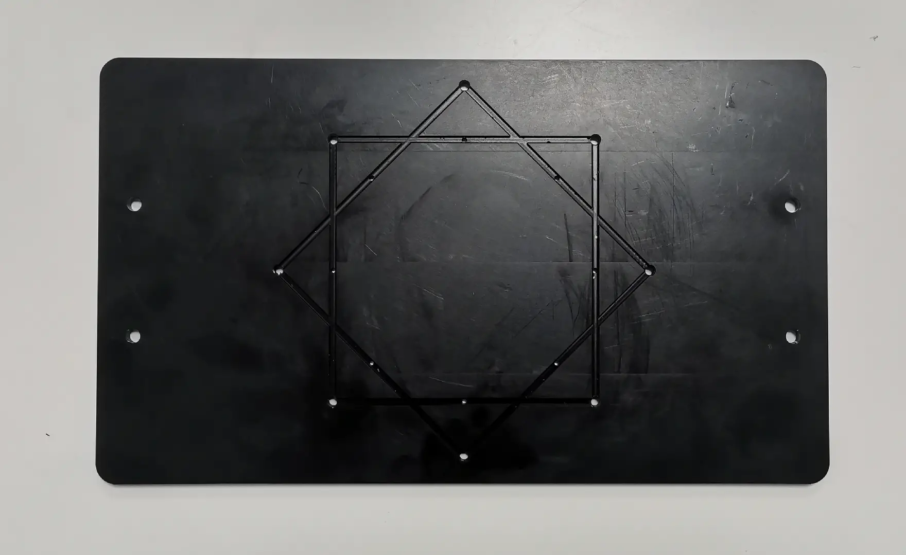
图2.1 底板 
图2.2 正安装方式 
图2.3 斜45度安装方式 -
固定底版
在使用机械臂之前，需要将底板固定在稳固的底座上。
随机械臂附带的 C 型夹固定方式可用于将底板固定在桌沿，如下图所示：
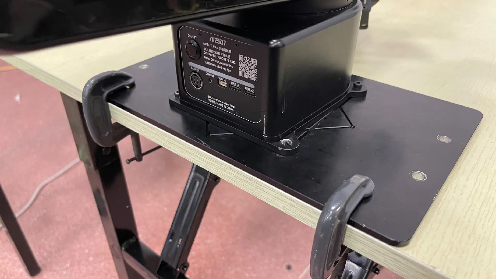
图2.4 底板C型夹固定方式 底板也可通过两侧的 M5 通孔 * 4 安装固定在需要的设备上，孔位与尺寸如下图所示：
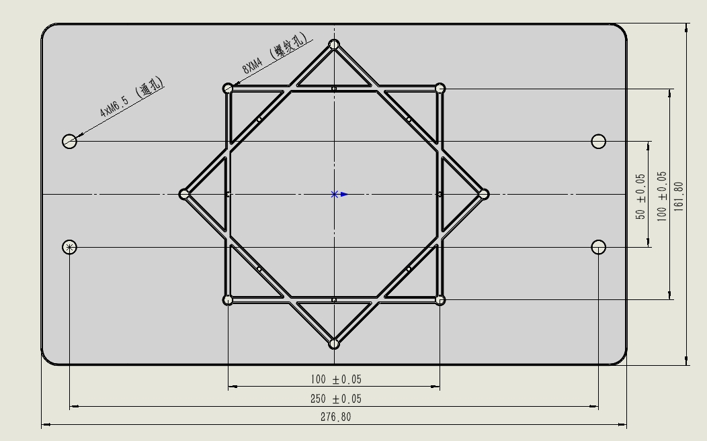
图2.5 底板孔位尺寸图
注意：
安装后必须确定机械臂处于开阔空间，以防机械臂在运动时碰撞到周围的人或物品。
2.1.2 安装末端连接件
取出末端连接件、M3 螺丝 * 3、L 型扳手如下图：
将末端连接件三个固定销与末端电机安装并用 M3 螺丝 * 3 固定，如下图：
-
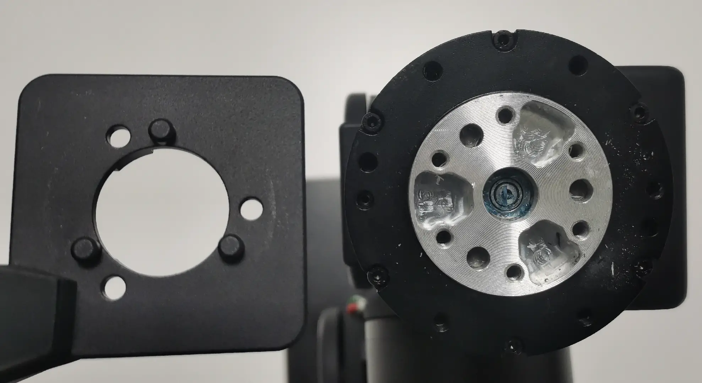 图2.7 末端连接件固定销*3位置图 -

图2.8 末端连接件固定完成图
2.2 安装夹爪或示教器 【选配套件】
-
安装夹爪
取出夹爪、M4螺丝 * 4，如下为夹爪与连接件固定位，将该放入末端连接件中，固定安装。
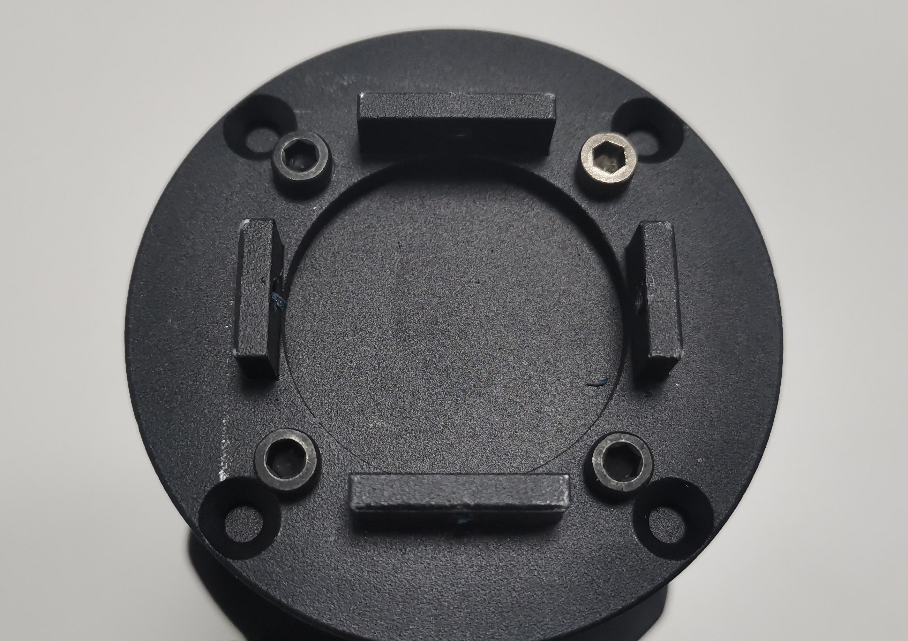
图2.9 夹爪电机连接固定位置图 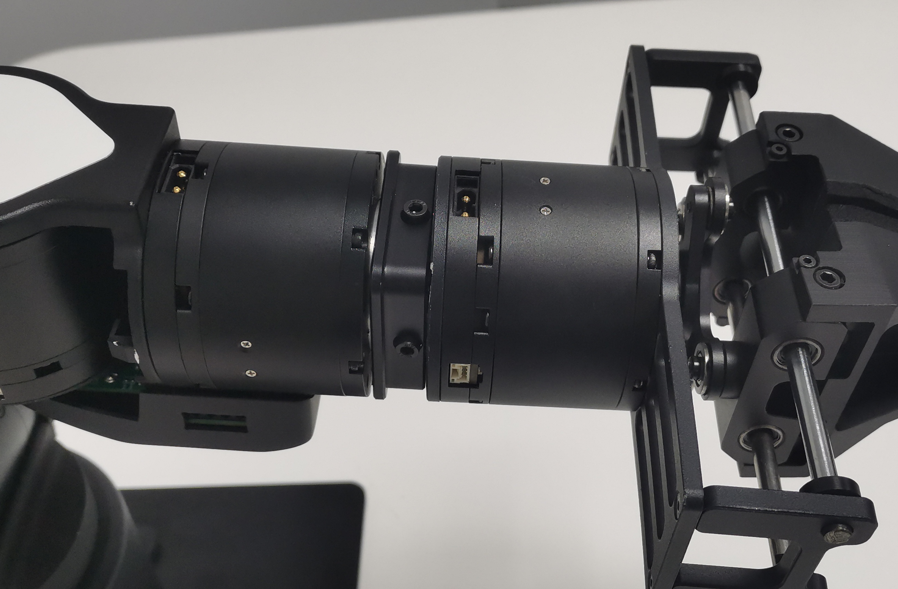
图2.10 夹爪螺丝位置图 取出夹爪配套的连接线

图2.11 夹爪连接线 找到如下图所示电源插口安装，
注意：
避免强行拉拽线，造成接触不良，安装或取下时拔插两个端口处。
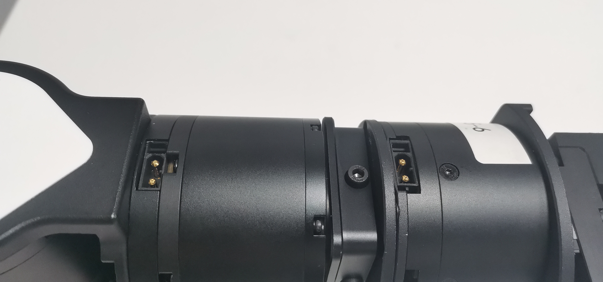
图2.12 夹爪安装插口图 
图2.13 夹爪安装实物图 -
安装示教器
取出示教器、M4螺丝*4，如下为示教器与连接件固定位，将该放入末端连接件中，固定安装。
图2.14 示教器电机连接固定位置图 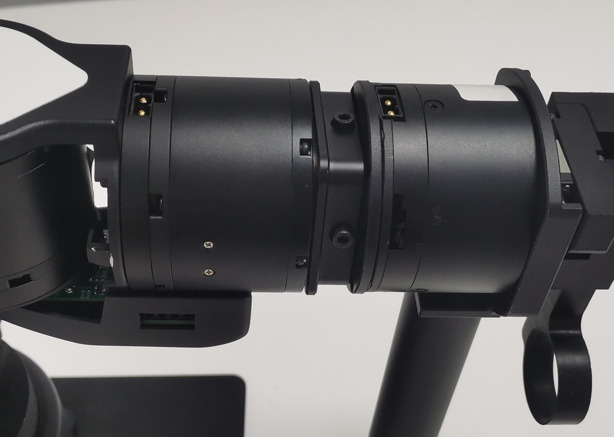
图2.15 示教器螺丝位置图 取出示教器配套的连接线
图2.16 示教器连接线 找到如下图所示电源插口安装
注意：
避免强行拉拽线，造成接触不良，安装或取下时拔插两个端口处。
图2.17 示教器安装插口图 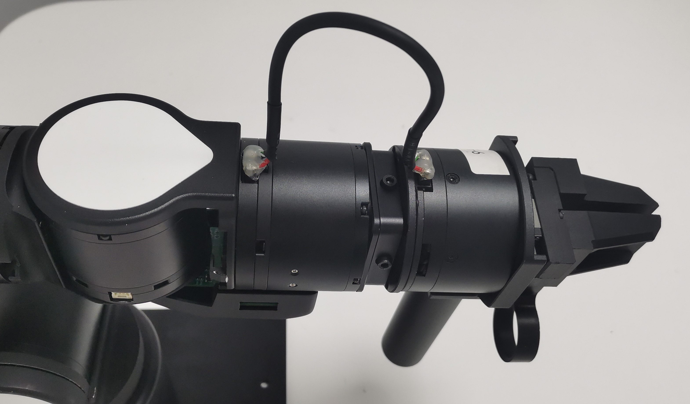
图2.18 示教器安装实物图
3. 机械臂使用说明
3.1 底座面板
-

图3.1 机械臂面板 -
- 红框部分是开机键，长按3s左右待指示灯条黄色灯珠依次全部亮起，等待黄灯全亮变成白灯全亮后完成开机
- 红框部分是关机键，长按3s左右待指示灯条黄色灯珠依次全部熄灭，完成关机
- 绿框部分是电源接口
- 蓝框部分是通信接口
USB
USB-1 (TypeC) 接口用于连接相机，用于视觉传感器数据传输。
USB-2 (TypeC) 接口用于连接上位机，用于数据传输和控制。
3.2 开机与标零
3.2.1 准备电脑
在 Ubuntu 20.04 系统安装最新的机械臂软件包，并配置好环境，安装 airbot_play 与 airbot_tools 两个软件包
3.2.2 标零
-
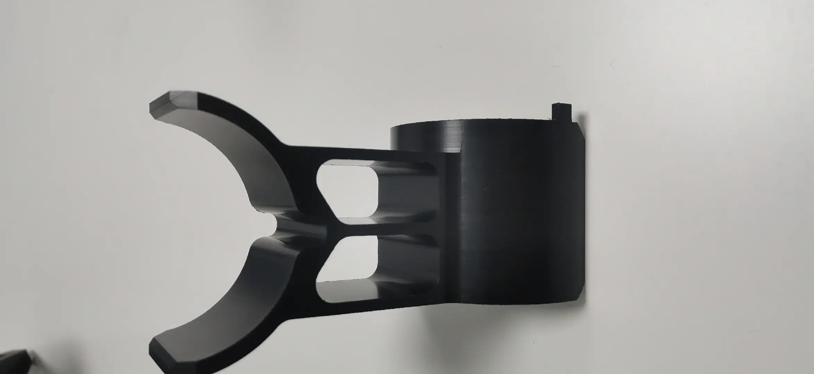
图3.2 标零工具 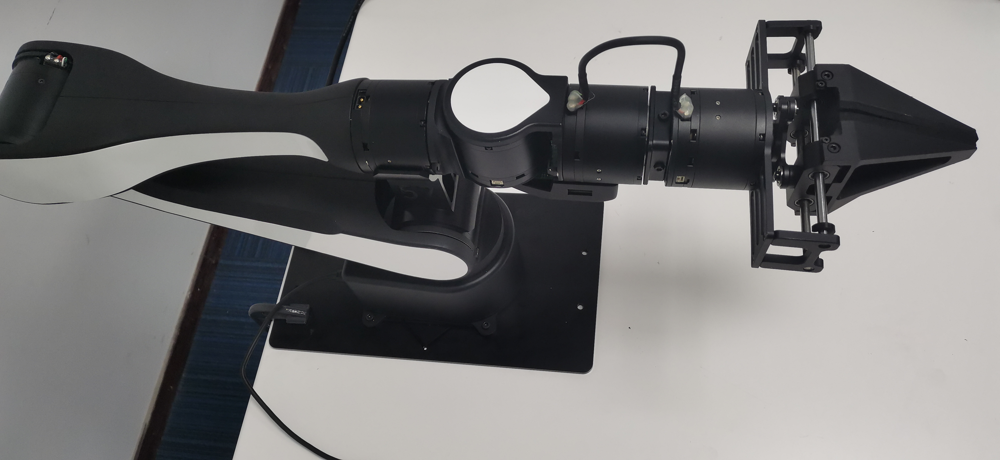
图3.4 标零机械臂实物图 -
首先使用数据线将电脑与机械臂 USB-2 连接，长按电源键 3s 左右待指示灯条黄色灯珠依次全部亮起，等待黄灯全亮变成白灯全亮后完成开机。
运行
airbot_set_zero命令，按代码提示，将标零工具放入 2 号关节处。标零工具需要紧密贴合 2 号关节电机，竖直向上放置，将机械臂固定在零位。放置完成后按回车，等待机械臂完成标零；标零完成后可将机械臂小臂抬起，拿出标零工具，随后再次按回车，等待标零结束。
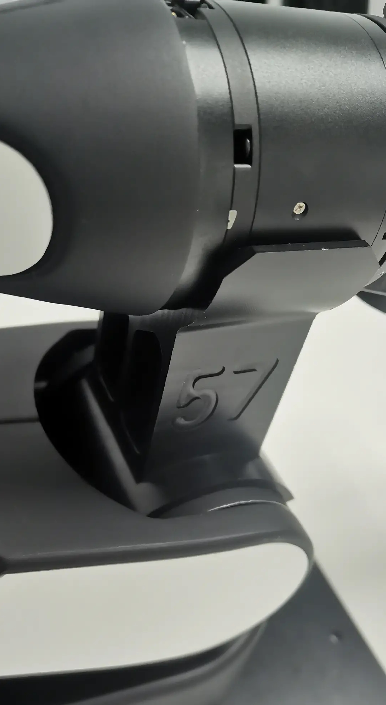
图3.3 标零工具固定位置图
3.2.3 灯效
黄色全亮：电源按键按下黄色流水灯（从左往右亮起）：开机中黄色流水灯（从右往左熄灭）：关机中黄色呼吸灯：上电自检中白色呼吸灯：脱机状态绿色呼吸灯：键盘控制模式青色长亮：重力补偿模式蓝色呼吸灯：录制中紫色长亮：离线模式紫色快闪：重放模式（到初始位置）紫色呼吸灯：轨迹重放中黄色快闪：程序退出中彩色流水灯：烧录固件中
3.3 键盘控制
运行键盘控制工具，机械臂进入受控状态：
在该状态下：
- 点按键盘
W/A/S/D/Q/E控制机械臂前后左右上下移动 - 点按键盘
1-0控制单个关节顺逆时针旋转 [与]控制夹爪开合- 长按末端按键进入重力补偿模式。在该模式下机械臂可被自由拖动；在该模式下短按底座按键开始 / 停止录制动作
- 双击末端按键进入重放待机模式。在该模式下，短按底座按键开始重放动作
Ctrl+C或Z退出程序
其他控制工具详见 AIRBOT Tools
4. FAQ
AIRBOT Play 机械臂相比于同类型的协作臂的优势是什么？
- 体积小，没有外置控制柜，方便集成
- 重量轻，自重仅3.5kg，可用于各种小型移动平台（四足、轮足、无人机等）。
- AI+，兼容ALOHA、Mobile ALOHA、 RT-X、VoxPoser等具身智能前沿工作，借助大模型理解自然语言指令，支持一键场景扫描功能，配合高保真仿真器，提高机械臂智能程度。
AIRBOT Play 机械臂的供电电压及电流是多少？
AIRBOT Play的供电电压范围是直流 24V，最大功率 240W。供电设备最好能提供瞬间最大10A的电流，以供机械臂在各种工况下使用。 可以使用配件中的电源适配器接入市电使用，也可以通过提供的电源线连接电池或移动电源供电。 电源适配器的插头防呆，正确插法见下图：
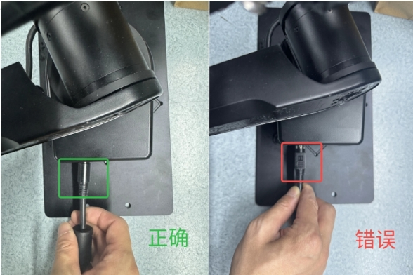
AIRBOT Play机械臂的末端可以接哪些执行器？
如果是 CAN 接口的末端执行器（如求之自研夹爪 AIRBOT Gripper），可以使用6号关节处的接口；该接口输出电压 24V，额定输出电流 1.15A。 如果是 RS485 接口的末端执行器，可以使用末端板的 RS485 接口，输出电压 5V / 7V / 24V，额定输出电流 1.15A。
AIRBOT Play机械臂的末端可以接哪些相机？
机械臂末端板的 USB Type-C 接口可以直接连相机，然后通过机械臂底座板的 USB-1 (TypeC) 接口连接上位机，实现相机的内部走线数据透传。 已测试可用的相机：舜宇、银牛、V4L2 相机；支持相机种类会持续更新。
AIRBOT Play机械臂的主控处理器是什么？
目前版本的 AIRBOT Play 机械臂由上位机控制，即将发布的AIRBOT Play Pro 将采用内置 X5 处理器。
目前支持的仿真平台有哪些？
目前支持 Isaac Sim、Gazebo 等仿真平台（持续添加中）。
夹爪的夹取算法包含哪些？是否可以提供？
包括 Graspnet / Catgrasp 等模块化抓取算法，以及 voxposer 等端到端规划抓取算法。 我们可以根据需求，提供相关代码包。
多模态感知包含哪些？是否可以提供？
多模态包括末端视觉、末端触觉、环境语音、场景SOP说明等，多模态感知融合多种环境信息进行长程任务执行。 我们可以根据需求，提供相关代码包。